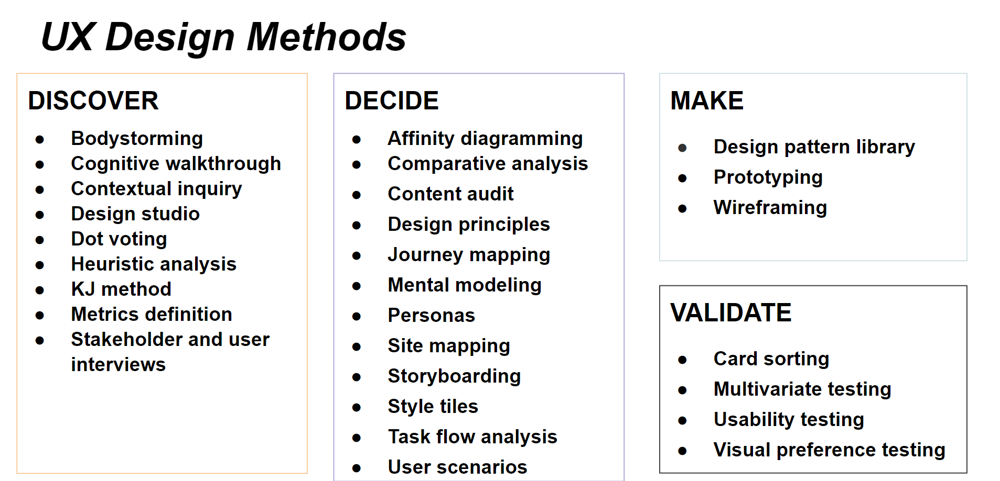
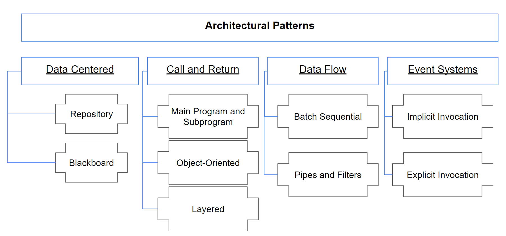
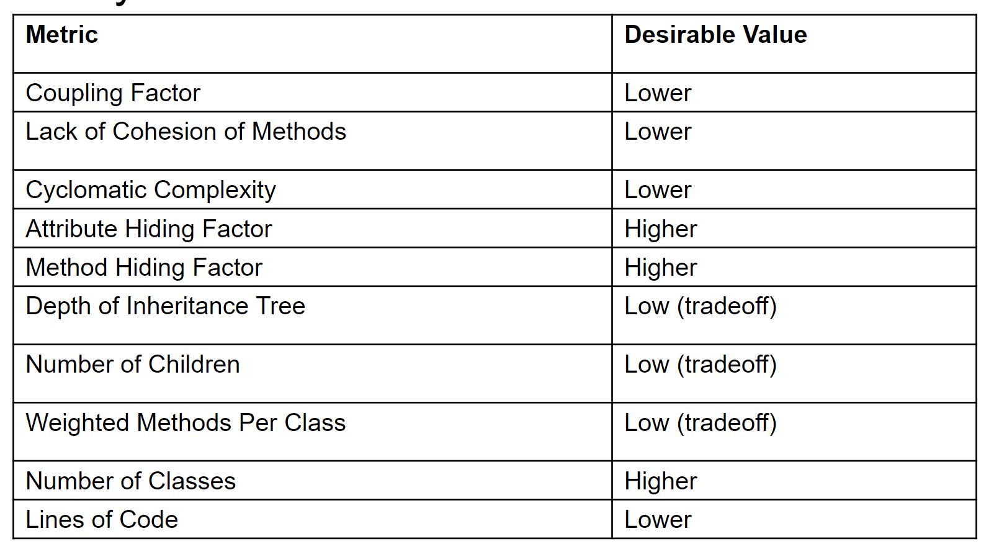

csc510 Review
Engineering Basics
1. Setup
2. Shells
Essential commands.
ls: list content of a directory.cd: change directories to a new path.mkdir: make a new directory.pwd: output current directorycp: copy filesrm: rm filestouch: make a new file/update status**cat: output the contents of a file.head: output the first lines of a file.tail: output the last lines of a file.grep: search files for a key phrase.wget: retrieve file from the web.cut: extract output of a file (columns)awkandsed: Magic commands for extracting, searching, and transforming content.
# Create a graphical directory tree from your current directory
ls -R | grep ":$" | sed -e 's/:$//' -e 's/[^-][^\/]*\//--/g' -e 's/^/ /' -e 's/-/|/'
# Command can run sequentially or conditionally:
command1 ; command2 # do command1 and command2 independently and sequentially
(command1 ; command2) # in a sub-shell
command1 || command2 # do command2 only if command1 fails
command1 && command2 # do command2 only if command1 succeeds
# Pipes and redirects change standard in and standard out from defaults.
command # default standard in and standard out
command < inputFile # redirect of inputFile contents to command as standard in
command > outputFile # redirect command output to outputFile as standard out
command1 | command2 # pipes output of command1 as standard in to command2
command & # run in background, typically used for applications
3. Version Control with Git
4. Markdown and IDES
5. Virtual Environments
6. Task Management
REST APIs
GET, POST, PUT, DELETE
Bots
A bot is an agent of automation. A bot can perform automated, repetitive, predefined tasks.
Relationship between CLI and Bots
Bots can simplify - complexity in complex tools (command line tools) - integration between complex systems - deployment and configuration (no app store; no install, passwords, or setup)
Bots Risks
- Information/interactions not discoverable
- Interactions may be ephemeral
- Reduced opportunity for learning
- Direct manipulation better for complex tasks
- May bring new disruptions and complexities
- Ethical and moral training
Design and UX Methods
Wireframes
A wireframe is a view schematic that captures all layout and content decisions of that view.
Storyboards
A storyboard illustrates the timeline of user performing a task as a sequence of frames.
Personas
A persona is arch-user type which represents a segment of a user population, and allows role-play during task planning and UX design.
Flow Maps
A flow map describes the wayfinding activity of a user and transitions between UI states.
Other Design Methods

Software Design
Diagrams
Drawing and diagramming is essential task in software development.
Types: Class Diagrams, Sequence Diagrams, State Diagrams
UML (Unified Modeling Language) 2.0
A standard for modeling object-oriented software. Evaluation: intention-revealing naming, Single Responsibility.
Design Patterns
Design patterns are descriptions of communicating objects and classes that are customized to solve a general design problem in a particular context.
The design pattern identifies the participating classes and instances, their roles and collaborations, and the distribution of responsibilities
Pattern Families
- Creational: Concerned with the process of object creation
- Structural: Deal with the composition of classes or objects
- Behavioral: Characterize the ways in which classes or objects interact and distribute responsibility
Some Patterns
- Singleton Pattern
- Visitor Pattern
- Builder Pattern
- Abstract Factory Pattern
- Adapter Pattern
- Strategy Pattern
Architecture

Data-Centered
- Repository: Data held in central database is accessible by all components.
- Blackboard: Blackboard is used as a global database for sharing different information as input data, partial solutions, alternatives and final solutions. Knowledge source, Blackboard, Control component drives
Call and Return
- Main and Subprogram
- Object-Oriented
- Layered Model Description
Data-Flow
- Pipe-And-Filter: Components (Filters), Connectors (Pipes)
- Batch Sequential: Each component completes transformation of input before passing to output.
Software Metrics and Refactoring
Root Canal Refactoring
Painful, expensive, the result of long periods of neglect.
When: Refactoring for protracted periods; time specifically set aside.
Why: Typically after code has gotten difficult to maintain.
Not considered best practice.Studies suggest that it is not common.
Floss Refactoring
Easy to do, regular, something people know they should do.
When: Continuously; Think "every few minutes".
Why: It helps achieve an immediate goal.
Considered best practice. Studies suggest that this is common.
Code Metrics
- Lines of Code
- Halstead Complexity: Number of operations and symbols in code.
- Cyclomatic Complexity: Number of independent paths in program.
- Dep Degree: Number of data flow paths in code.
OO Metrics
- Weighted Methods Per Class: essentially number of methods.
- Cohesion: Degree to which the tasks performed by a single module are functionally related.
- Coupling: Measure of interdependence between two objects.
- Attribute Hiding Factor: Measure of the proportion of attributes that are "invisible" from other classes or objects
- Method Hiding Factor: Measure of the proportion of methods that are "invisible" from other classes or objects
Summary

Process Metrics
- Velocity: Units of work completed per iteration.
- Burndown: Work done versus outstanding work overtime.
- Fault-slippage: #Bugs making it into production.
Introduction to Testing
Types of Testing
-
Unit Testing
Confirm that the component or subsystem is correctly coded and carries out the intended functionality
-
Integration Testing
Test the interfaces among the subsystems.
-
System Testing
Determine if the system meets the requirements (functional and nonfunctional)
-
Acceptance Testing
Demonstrate that the system meets the requirements and is ready to use.
Styles of Testing
Black Box Testing
- Focus: I/O behavior
- Goal: Reduce number of test cases by equivalence partitioning
White Box Testing
Advantages: - Based on the code: can be measured objectively and automatically - Can be used to compare test suites - Allows for covering the coded behaviors
Different kinds: - Control-flow based - Data-flow based - fault based
TDD(Test-Driven Development)
- Write tests before writing code
- Tests are automated
- Often use "x" Unit framework
- Must run at 100% before proceeding
BDD(Behavior-Driven Development)
- example-based communication with testers, managers
- Features and scenarios written in plain-text
- Tools can execute features as automated tests.
Goals:
- Improve feature understanding
- Describe how system behaves rather than how it works
- Must run at 100% before proceeding
Software Processes
The Roots of Agile
- Individuals and interactions over processes and tools
- Working software over comprehensive documentation
- Customer collaboration over contract negotiation
- Responding to change over following a plan
Stories
Card - Conversation - Confirmation
Attributes of an user story or epic
INVEST
- Independent
- Negotiable
- Valuable for purchasers or users
- Estimate-able
- Small
- Testable
Extreme programming practice: Corollary
- Real Customer Involvement
- Incremental Deployment
- Team Continuity
- Shrinking Team
- Root-Cause Analysis
- Shared Code
- Code & Test
- Single Code Base
- Daily Deployment
- Negotiated Scope Contract
Lean Principles
- Eliminate Waste
- Create Knowledge
- Build Quality In
- Defer Commitment
- Deliver Fast
- Respect People
- Improve the System
Continuous Integration
A practice where developers automatically build, test, and analyze a software change in response to every software change committed to the source repository. A continuous integration server monitors the status of every commit and reports any problems.
Claimed Benefits
- Detecting defects and fixing them faster
- Health of software is measurable
- Reduce assumptions about environment
- Reducing repetitive processes saves time, costs, and effort
- CI can enable you to release deployable software at any point in time.
- CI offers a global mechanism for feedback about failure, enabling developers to have more confidence in making their changes.
Principles
- Commit Code Frequently
- Don’t commit broken code
- Fix broken builds immediately
- Write automated developer tools
- All tests and inspections must pass
- Run private builds
- Avoid getting broken code
Risks of Not doing CI
- Little or no confidence in whether we could even build the software
- Lengthy integration phases before delivering the software internally (to test teams) or externally (customer), during which nothing else got done
- Inability to produce and reproduce testable builds
- Fear of making changes or refactoring the database or code
- Difficulty in populating the database with diff. sets of data
- Difficulty in maintaining development and testing environments
- Late discovery of defects
- Lack of project visibility (awareness of changes)
- Low-quality software
Configuration Management
Traditional Configuration Management (CM)
- Identify all items related to software.
- Manage changes to those items.
- Enable variations of items and changes.
- Maintain quality of versions and releases.
- Provide traceability between changes and requirements.
Modern Configuration Management
In traditional configuration management, the process is not fully triggered until deployment.
In modern configuration management, lightweight CM is integrated throughout the software process.
Package Manager
Binary: apt-get, choco (windows), brew (mac)
Source: bower(web), nuget(C#), pip(python), npm(node.js), maven(Java), RubyGems
Task Manager
Tools: make, ivy, ant, grunt Tasks: Validation, testing, tool chains(antlr example), less to css translation, deployment, staging
Configuration Management Concepts
- agentless: Operations can be applied to remote client without any local service running.
- configuration polling: Client queries periodically master server for new configuration state.
- idempotent: Applying operations multiple times will not affect result - (e.g. if python is already installed, script will not fail).
- orchestration: Controlling schedule of change rollout while ensuring operational stability.
Configuration Tools
Ansible, Puppet, Chef,
Productivity
Personal Productivity
- TODO
- Deliberate Work